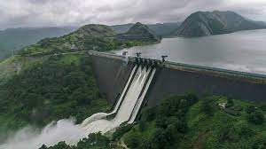
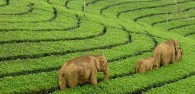
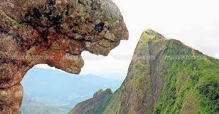
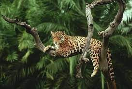
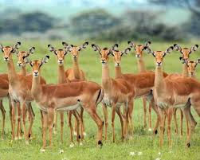

Idukki Dam
The shutters of Idukki Dam will likely be opened before the water level reaches 2400 ft, as water level in Kerala’s largest hydro-electric reservoir has been rising due to incessant rainfall. Power Minister M M Mani declared this while speaking at a review meeting, recently held at the Collectorate regarding the safety of Idukki and Mullaperiyar reservoirs. Tourists need to halt their plans of visiting this place now as of now.
The shutters of Idukki Dam will likely be opened before the water level reaches 2400 ft, as water level in Kerala’s largest hydro-electric reservoir has been rising due to incessant rainfall. Power Minister M M Mani declared this while speaking at a review meeting, recently held at the Collectorate regarding the safety of Idukki and Mullaperiyar reservoirs. Tourists need to halt their plans of visiting this place now as of now.

Munnar
Munnar is a town in the Western Ghats mountain range in India’s Kerala state. A hill station and former resort for the British Raj elite, it's surrounded by rolling hills dotted with tea plantations established in the late 19th century. Eravikulam National Park, a habitat for the endangered mountain goat Nilgiri tahr, is home to the Lakkam Waterfalls, hiking trails and 2,695m-tall Anamudi Peak.
The region has been inhabited by hunter-gatherer tribals like the Malayarayan and Muthuvan for thousands of years. Tradition states that Colonel Arthur Wellesley, later the Duke of Wellington, was the first British person to pass through Munnar during Tippu Sultan's campaign in Travancore, but this is unsubstantiated. The first survey of the terrain was undertaken by Benjamin Swayne Ward in 1816–1817, who followed the Periyar into the Western Ghats and established a camp at the confluence of three rivers, from which the name of Munnar is derived.
In 1900, a ropeway was built and eventually monorails were installed for easier transport of goods to the plains. In 1901, P. R. Buchanan took over as General Manager and began the most extensive clearing of jungles for plantations. In 1908, construction started on a new railway which opened in 1909. By 1911, around 16,000 acres of the region was under cultivation.

Parunthumpara
Parunthumpara or 'Eagle Rock’ is situated near Peermedu in Idukki district, is a place famed for its pristine natural beauty. A trekker's delight offering a bird's eye view of an endless stretch of green forests and the landscape, Parunthumpara is a favourite of off-beat travellers. And if the sky is clear, the visitors can also get a view of the Sabarimala forests from here.
Parunthumpara, literally meaning eagle's rock, is 6 km away from Peermedu-the famous plantation town in Kerala, on the National Highway 220. Parunthumpara can also be accessible through two main roads in the district; from Nedumbassery-Munnar road and the Kumarakom-Thekkady road. It is among the finest spots to visit when one is in the Thekkady area.


Idukki Wildlife Sanctuary
Idukki district is among the most naturally endowed districts in Kerala and the Idukki Wildlife Sanctuary is a prime example. Located about 450-750 m above sea level, the sanctuary is cradled by the Cheruthoni and Periyar Rivers. The beautiful lake surrounding the sanctuary is perfect for romantic boat rides. The tropical evergreen and deciduous trees add to the charm of the place.
One can see elephants, bison, sambar deer, wild dogs, jungle cats, tiger and wild boar along with various species of snake including cobras, vipers, kraits and many non-poisonous snakes. There are many bird species as well, like the Grey Jungle Fowl, Malabar Grey Hornbill, woodpeckers and bulbuls. The sanctuary lies adjacent to the world famous Idukki Arch Dam.